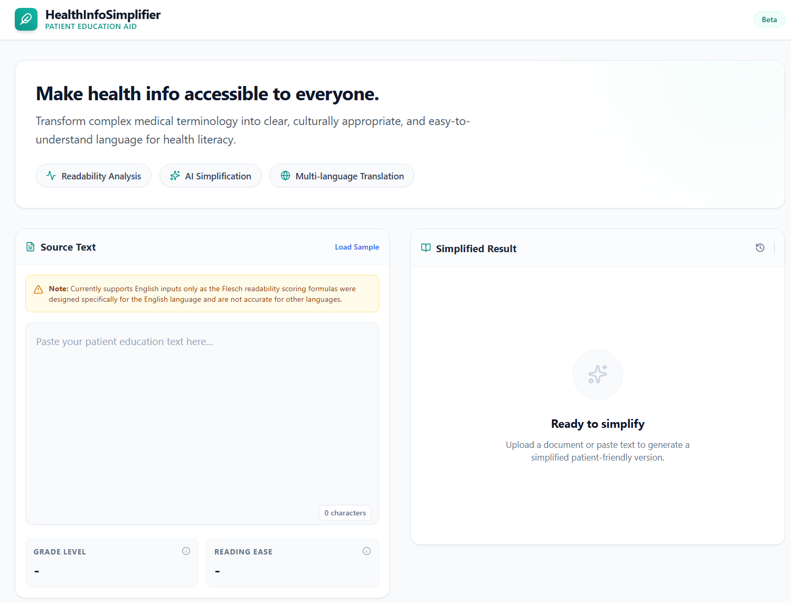

Projects

Health Info Simplifier
An AI-powered web application hosted on that simplifies complex health education content into accessible language. Features multilingual translation support to break down language barriers in healthcare.

Project in Development
Stay tuned, this project is on its way.